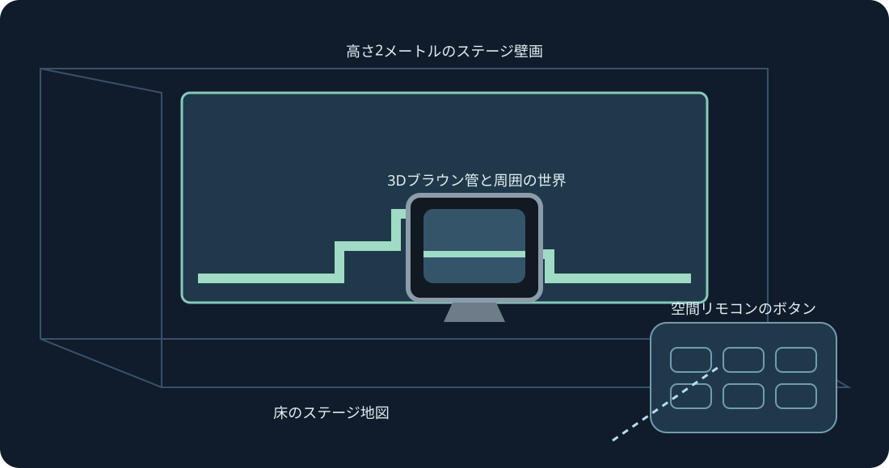

全体マップの壁、床、アーケードテーブル、CRT、曲面ギャラリー。実験的なXRプレビューです。両グリップで拡大縮小します。
実験的プレビューです。コンパイル、lint、形状と入力の自動テストを行います。この版ではヘッドセットへの接続、インストール、実機テストを行っていません。追跡、快適さ、パススルー、表示間隔は実機確認が必要です。
後日テストする際は開発者モードを有効にし、SideQuestまたはadb install -rで公開ARM64 APKをインストールしてください。提供元不明からMario Compilation Ultra XRを開き、システム選択画面でカートリッジまたはZIPを選んでプレイします。All-Stars + WorldとYoshi’s Islandは別々に読み込みます。公開APKにROMや進行データはありません。
レベル、ネイティブCRT、リモコン、設定を配置対象にします。片手のグリップで移動と回転、両グリップで位置ロック中もレベルを拡大縮小できます。リモコンには微調整、半分、2倍、リセットもあります。復帰操作でUIを近くに戻せます。Yで設定、プレイページには全SNESボタンがあります。
ピンチしてスティックを動かし、もう片方の手でボタンを押します。中指のピンチでハンドルをつかみます。追跡が失われると入力を解除します。
新規インストールは90 Hzと高さ2 mの透明AR壁画を既定にします。非対応の場合は別の表示周波数を選び、ゲーム本来の速度は変えません。壁の自動配置には任意のシーン・アンカー権限と室内スキャンを使います。手動配置と床調整も可能です。パススルーはランタイムが提供し、ネット、マイク、カメラ画像の権限は要求しません。
半透明の予告は情報表示であり、遠くの物体を動かしません。確認済み配置は開始時から表示でき、学習画像はローカルのゲームから取得します。
アーケードテーブルは読み込まれたエリアを表示します。物理挙動やオブジェクトの起動条件は元のままです。
PCのクイック操作：右スティック押し込み中、十字左右でズーム、上で1:1、下で全体マップ、Aで固定、Bで元カメラ、Xで撮影、Yでプレイヤー追従。離すと通常のSNES操作に戻ります。F1またはメニューのYヘルプで図解を開きます。
SNES: D-pad · A · B · X · Y · L · R · Start · Select
Touch: A → SNES B · B → SNES Y · X → SNES A · RT → SNES X · R3 → Start · LT → Rewind · Y → 設定画面を移動
Parity · Validation